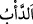
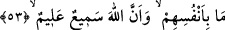

âyet Rasûlullah (s.a.v.)’i tesellî etmek içindir. Yani, küfür ve inat konusunda Kureyş
kâfirlerinin âdeti, çirkin davranışlarıyla meşhur olan Firavun âilesinin âdeti gibidir.
“
” lugatte bir işe devam etmek anlamındadır. Bir kimsenin bir işi devamlı
yapageldiğini ve o işte kendisini yorduğunu ifade eder. Âdete de “de’b” denilmesi,
insanın âdeti üzere devam etmesindendir.
Kişinin “âli”, yani âilesi de kendisine dönüp gelen, müracaat eden ve en güçlü
bağlarla bağlı olan kimselerdir. Bu sebeple kişinin akrabaları ve arkadaşları hakkında
“âl” kelimesi kullanılmaz. Âyette kastedilen ise Firavun ve âilesi, yani ona tâbi
olanların âdeti, gidişâtıdır.
“Onlar da Allah’ın âyetlerini inkâr ettiler.” “Âyetler”, nefislerde (enfüs) ve kâinatta
(âfâk) konulup yerleştirilen tevhîdin delilleridir. Ya da mutlak olarak peygamberlerin
mu‘cizeleridir.
“Allah da onları günahları sebebiyle yakaladı.” Yani Allah Teâlâ, küfürleri ve diğer
isyanları sebebiyle onları cezâlandırdı.
“Şüphesiz Allah güçlüdür, cezâsı çetindir.” Azabına kimse engel olamaz.
53. Bu böyledir, çünkü bir millet kendilerinde bulunan (güzel meziyet)i
değiştirmedikçe Allah onlara verdiği nimeti değiştirmez ve bir de Allah işitendir,
bilendir.
“Bu böyledir,” yani Allah Teâlâ baştan onları cezâlandırmaya muktedirken onları
cezâlandırmayı kötü amellerine bağlaması şu sebeptendir: “çünkü” herhangi “bir
millet kendilerinde bulunanı değiştirmedikçe” yani onlar ister büyük ister küçük olsun
nimete nail oldukları zamandaki amellerini ve hallerini değiştirip de istenmeyen
vasıfları kazanmadıkları müddetçe “Allah onlara verdiği nimeti değiştirmez.” yani
böyle yapmak yüce Allah’a yaraşmaz ve onların içinde oldukları nimeti değiştirmek
hikmetine göre doğru olmaz.
Onların önceki hallerinin hoşnut olunan sâlih haller olması veya şimdiki hallerine
göre sâlih olmaya daha yakın olması fark etmez. Tıpkı o kâfirlerin gidişâtı gibi. Onlar,
kendilerine peygamber gönderilmeden önce putlara tapan kâfir bir toplumdu.
Kendilerine bahşedilen mühlet nimetiyle ve diğer dünyevî nimetlerle varlıklarını
sürdürdüler. Kendilerine apaçık mucizelerle Nebî (a.s.) peygamber gönderilince önceki
hallerini daha da kötüsüyle değiştirdiler. Peygamber Efendimiz (a.s.)’ı yalanladılar.
O’na ve kendisine tâbi olan müminlere düşmanlık ettiler. Felâkete uğramaları için
onlara harp açtılar. Allah da onlara olan mühlet nimetini kaldırıp üzerlerine azab ve
cezâ gönderdi.